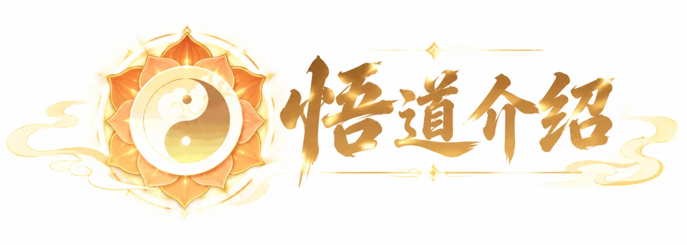
人物30级解锁
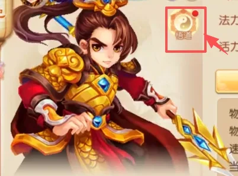
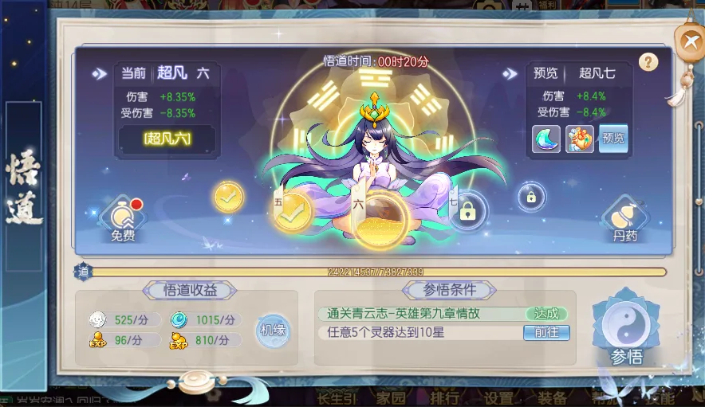
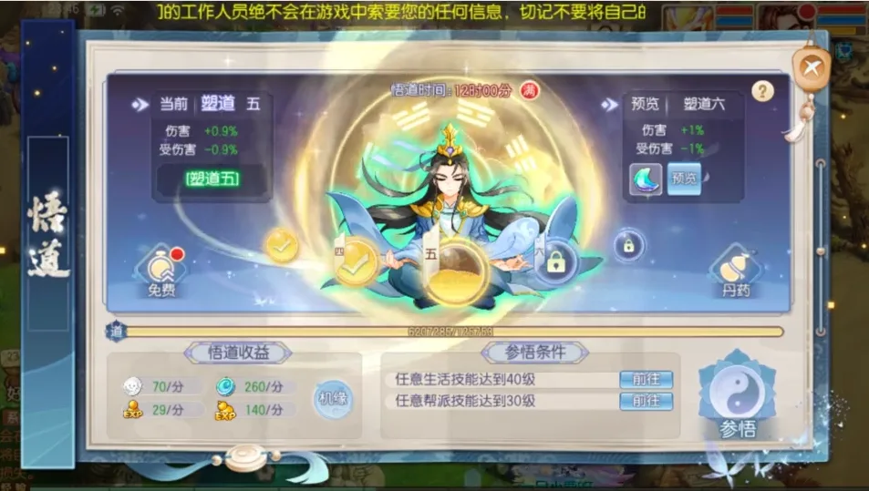
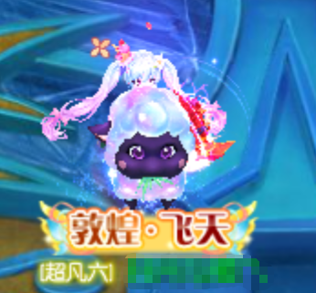
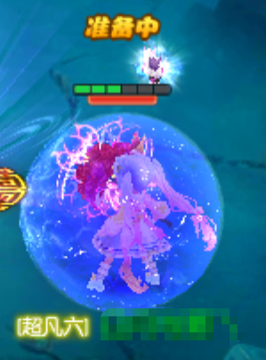
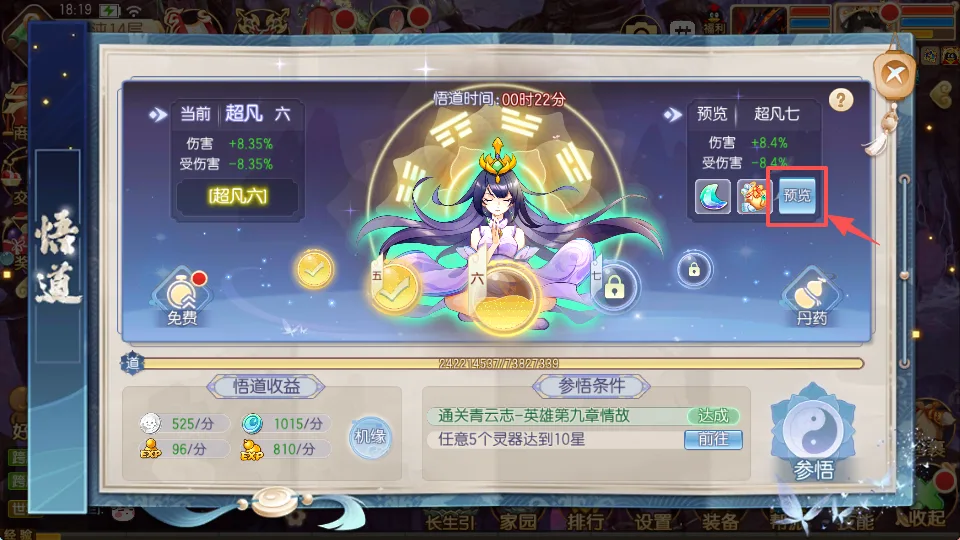
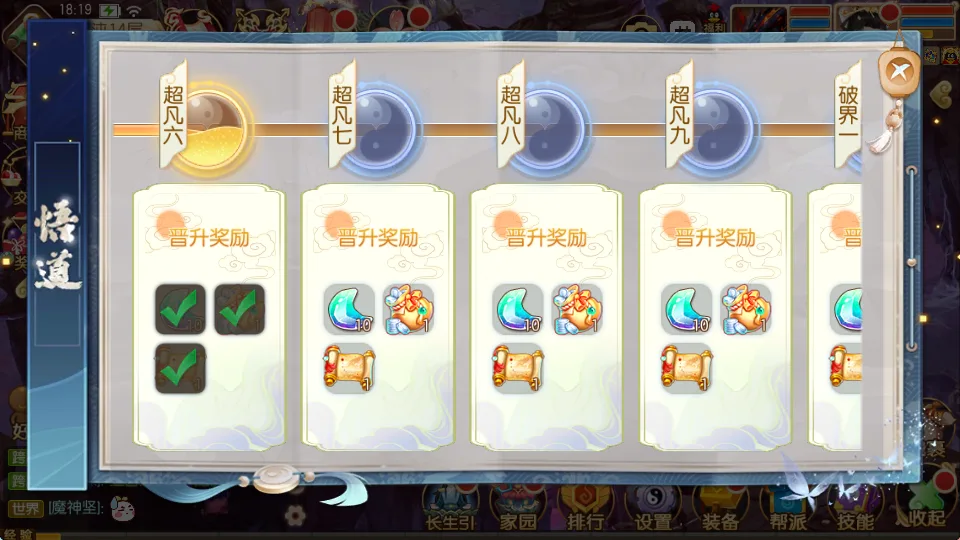
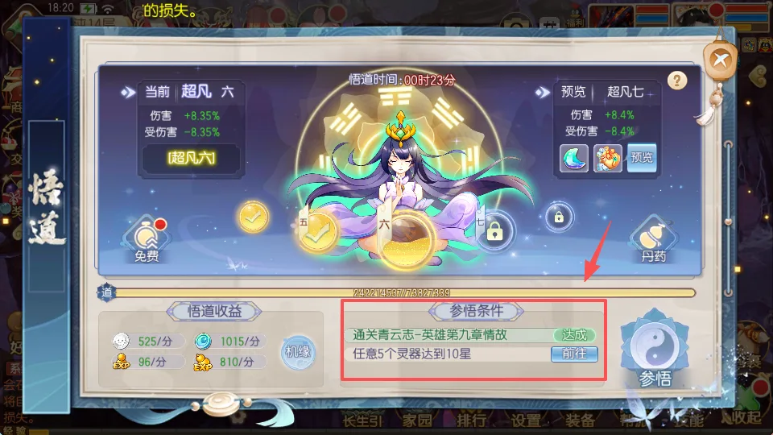
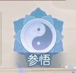
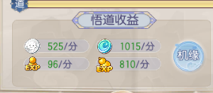
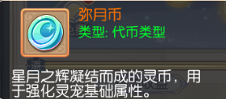
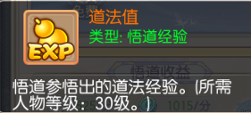
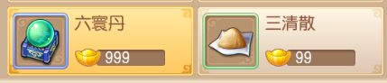
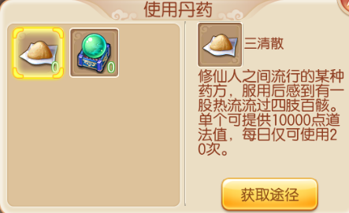
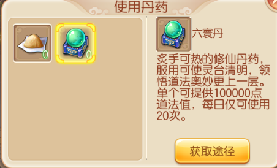
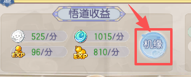
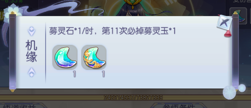
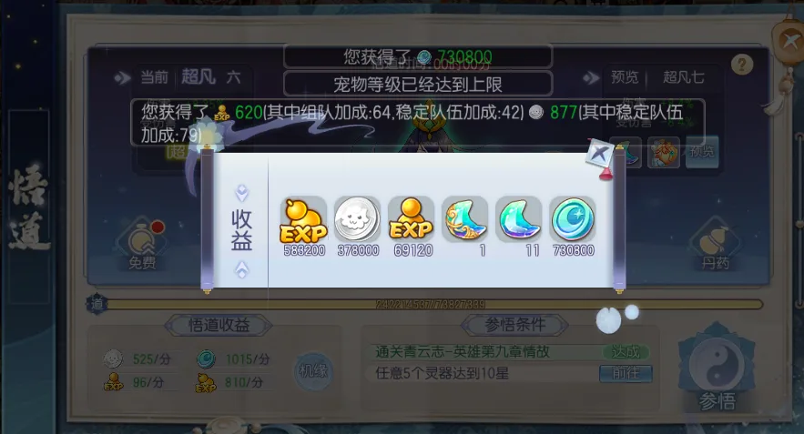
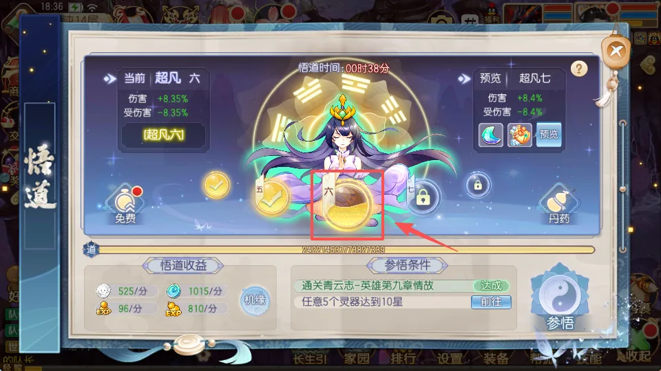
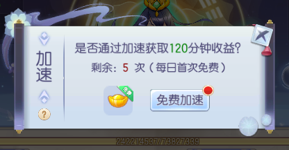
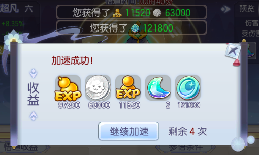
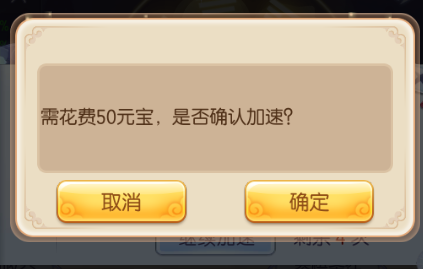
| 参悟前 | 参悟后 | 经验 | 每分钟经验 | 参悟条件 |
|---|---|---|---|---|
| 塑道1 | 塑道 2 | 30739 | 100 | 条件[1]角色达到 30 级 条件[2]拥有 4 个仙侣 |
| 塑道 2 | 塑道 3 | 50301 | 110 | 条件[1]任意一件装备启灵等级达到 5 级 条件[2]完成一次赏月 |
| 塑道 3 | 塑道 4 | 72657 | 120 | 条件[1]完成 5 场黑龙浩劫 条件[2]完成 5 次赏金 |
| 塑道 4 | 塑道 5 | 97808 | 130 | 条件[1]角色达到 40 级 条件[2]任意 4 个修炼技能达到 2 级 |
| 塑道 5 | 塑道 6 | 125753 | 140 | 条件[1]任意生活技能达到 40 级条件[2]任意帮派技能达到 30 级 |
| 塑道 6 | 塑道 7 | 156493 | 150 | 条件[1]完成 1 次还魂秘术 条件 [2]通关青云志 - 普通第一章毒血尸王秘术 |
| 塑道 7 | 塑道 8 | 190027 | 160 | 条件[1]角色达到 45 级 条件[2]任意一件装备启灵等级达到 9 级 |
| 塑道 8 | 塑道 9 | 226356 | 170 | 条件[1]使用 1 张乾坤灵宝图 条件[2]任意 6 个修炼技能达到 3 级 |
| 塑道 9 | 育道1 | 265479 | 180 | 条件[1]羽翼达到 4 阶 条件[2]首次通关精英副本 条件[3]从道法心魔对抗中获得胜利 |
| 育道1 | 育道 2 | 307397 | 190 | 条件[1]通关青云志 - 普通第二章鲁莽 条件[2]角色战力达到 5600 |
| 育道 2 | 育道 3 | 352109 | 200 | 条件[1]角色达到 50 级 条件[2]通关青云志普通第二章小灰 |
| 育道 3 | 育道 4 | 399616 | 210 | 条件[1]羽翼达到 6 阶 条件[2]完成 30 次帮派任务 |
| 育道 4 | 育道 5 | 449917 | 220 | 条件[1]探险猫探险 1 次 条件[2]房屋风水值达到100 |
| 育道 5 | 育道 6 | 503013 | 230 | 条件[1]任意羽翼灵护达到 0 星 10 段 条件[2]通关青云志普通第二章师尊 |
| 育道 6 | 育道 7 | 558904 | 240 | 条件[1]角色达到 55 级 条件[2]任意一件装备启灵等级达到12级 |
| 育道 7 | 育道 8 | 617589 | 250 | 条件[1]通关青云志精英第一章少帮主 条件[2]完成 3 次十二生肖战斗 |
| 育道 8 | 育道 9 | 679068 | 260 | 条件[1]任意 6 个修炼技能达到7级 条件[2]角色战力达到7500 |
| 育道 9 | 化道1 | 743342 | 270 | 条件[1]角色达到 60 级 条件[2]通关青云志 - 精英第二章师尊 条件[3]从道法心魔对抗中获得胜利 |
| 化道1 | 化道 2 | 810410 | 280 | 条件[1]拥有一件橙色装备 条件 [2]通关青云志 - 普通第三章愤怒 |
| 化道 2 | 化道 3 | 880273 | 290 | 条件[1]通关 60 级及以上精英副本 条件[2]拥有 4 个 2 星法宝 |
| 化道 3 | 化道 4 | 952931 | 300 | 条件[1]挑战世界 BOSS 五次 条件[2]小镇达到 3 级 |
| 化道 4 | 化道 5 | 1028383 | 310 | 条件[1]角色达到 65 级 条件[2]羽翼达到 10 阶 |
| 化道 5 | 化道 6 | 1106630 | 320 | 条件[1]通关青云志 - 普通第三章冰雪美人 条件[2]装备 12 颗 5 级龙晶 |
| 化道 6 | 化道 7 | 1187671 | 330 | 条件[1]完成 2 次妖兽突袭 条件[2] 4 个法宝化形等级达到 2 级 |
| 化道 7 | 化道 8 | 1271506 | 340 | 条件[1]单赛季完成 5 次上古战场 条件[2]角色战力达到10000 |
| 化道 8 | 化道 9 | 1358136 | 350 | 条件[1]角色达到 70 级 条件[2]通关青云志 - 普通第四章赤炎猪妖 |
| 化道 9 | 道元1 | 1447561 | 360 | 条件[1]通关青云志精英第四章阴灵头领 条件[2]拥有一个 2 星光华 条件[3]从道法心魔对抗中获得胜利 |
| 道元1 | 道元 2 | 1539780 | 370 | 条件[1]2 个仙侣元神达到 10 级条件[2]拥有一个子女 |
| 道元 2 | 道元 3 | 1634794 | 380 | 条件[1]任意 2 只坐骑达到 2 阶条件[2]拥有 4 个 2 星灵器 |
| 道元 3 | 道元 4 | 1732602 | 390 | 条件[1]角色达到 75 级 条件[2]通关青云志精英第五章黄鸟 |
| 道元 4 | 道元 5 | 1833205 | 400 | 条件[1]羽翼达到 12 阶 条件[2]装备 12 颗 6 级龙晶 |
| 道元 5 | 道元 6 | 1936602 | 410 | 条件[1]通关 75 级精英副本 条件[2]拥有一个 8 技能宠物 |
| 道元 6 | 道元 7 | 2042794 | 420 | 条件[1]角色战力达到 12000 条件[2]任意 6 个修炼技能达到10级 |
| 道元 7 | 道元 8 | 2151780 | 430 | 条件[1]角色达到 80 级 条件[2]通关青云志精英第六章血骷髅 |
| 道元 8 | 道元 9 | 2263561 | 440 | 条件[1]任意 5 只坐骑达到 2 阶条件[2]拥有 3 个 3 星光华 |
| 道元 9 | 混元1 | 2378136 | 450 | 条件[1]任意羽翼灵护达到1 星 条件[2]全身穿戴橙色装备 条件[3]从道法心魔对抗中获得胜利 |
| 混元1 | 混元 2 | 2495506 | 460 | 条件[1]重铸一次装备特效 条件[2]拥有 6 个类别的变身卡 |
| 混元 2 | 混元 3 | 2615671 | 470 | 条件[1]角色达到 85 级 条件[2]全身装备启灵达到 15 级 |
| 混元 3 | 混元 4 | 2738630 | 480 | 条件[1]通关 85 级及以上英雄副本 条件[2]任意 6 个修炼技能达到 13 级 |
| 混元 4 | 混元 5 | 2864383 | 490 | 条件[1]通关青云志精英第七章青龙 条件[2]任意宠物印记达到5 级 |
| 混元 5 | 混元 6 | 2992931 | 500 | 条件[1]装备 1 个橙色天命元魂条件[2]角色战力达到16000 |
| 混元 6 | 混元 7 | 3124273 | 510 | 条件[1]角色达到 90 级 条件[2]装备 15 颗 8 级龙晶 |
| 混元 7 | 混元 8 | 3258410 | 520 | 条件[1]通关青云志精英第八章魔教 条件[2]拥有 5 个 5 星光华 |
| 混元 8 | 混元 9 | 3395342 | 530 | 条件[1]6 件装备拥有神识 条件[2]拥有一只神兽 |
| 混元 9 | 合道1 | 3535068 | 540 | 条件[1]拥有一只飞升宠物 条件[2]拥有一个橙色宠物印记 条件[3]从道法心魔对抗中获得胜利 |
| 合道1 | 合道 2 | 3677589 | 550 | 条件[1]角色达到 95 级 条件[2]通关青云志 - 英雄第二章师尊 |
| 合道 2 | 合道 3 | 3829040 | 560 | 条件[1]任意宠物印记达到 10 级条件[2]羽翼达到 16 阶 |
| 合道 3 | 合道 4 | 3971013 | 570 | 条件[1]通关轮回虚空 10 层 条件[2]4 个法宝化形等级达到 5 级 |
| 合道 4 | 合道 5 | 4121917 | 580 | 条件[1]任意天命元魂等级达到20 级 条件[2]角色战力达到 20000 |
| 合道 5 | 合道 6 | 4275616 | 590 | 条件[1]角色达到 99 级 条件[2]拥有一个飞升子女 |
| 合道 6 | 合道 7 | 4432109 | 600 | 条件[1]通关青云志 - 英雄第三章冰雪美人 条件[2]任意 6 个修炼技能达到 16 级 |
| 合道 7 | 合道 8 | 4591397 | 610 | 条件[1]通关轮回虚空 15 层 条件[2]装备 2 个橙色天命元魂 |
| 合道 8 | 合道 9 | 4753479 | 620 | 条件[1]通关轮回虚空 18 层 条件[2]任意 1 件装备注灵等级达到2级 |
| 合道 9 | 造界1 | 4918356 | 630 | 条件[1]任意 4 件神兵境界达到2阶 条件[2]拥有 5 个 7 星光华 条件[3]从道法心魔对抗中获得胜利 |
| 造界1 | 造界 2 | 5086027 | 640 | 条件[1]通关青云志 - 英雄第四章阴灵头领 条件[2]装备 12 颗 6 级灵石 |
| 造界 2 | 造界 3 | 5256493 | 650 | 条件[1]羽翼达到 18 阶 条件[2]任意一件装备启灵等级达到 20级 |
| 造界 3 | 造界 4 | 5429753 | 660 | 条件[1]任意天命元魂等级达到25 级 条件[2]角色战力达到 25000 |
| 造界 4 | 造界 5 | 5605808 | 670 | 条件[1]装备 12 颗 7 级灵石 条件[2]拥有 2 个 2 级面饰 |
| 造界 5 | 造界 6 | 5784657 | 680 | 条件[1]通关青云志 - 英雄第五章黄鸟 条件[2]拥有 3 个橙色宠物印记 |
| 造界 6 | 造界 7 | 5966301 | 690 | 条件[1]装备 12 颗 8 级灵石 条件[2]任意 5 个灵器达到 6 星 |
| 造界 7 | 造界 8 | 6150739 | 700 | 条件[1]通关轮回虚空 20 层 条件[2]装备 3 个橙色天命元魂 |
| 造界 8 | 造界 9 | 6337972 | 710 | 条件[1]4 个法宝化形等级达到7级 条件[2]装备 14 件稀有有灵 |
| 造界 9 | 合界1 | 6528000 | 720 | 条件[1]通关青云志 - 英雄第六章血骷髅 条件[2]任意羽翼灵护达到 1 星 10 段 条件[3]从道法心魔对抗中获得胜利 |
| 合界1 | 合界 2 | 6720821 | 730 | 条件[1]任意 2 个天命元魂等级达到 25 级 条件[2]羽翼达到 25阶 |
| 合界 2 | 合界 3 | 6916438 | 740 | 条件[1]通关轮回虚空 22 层 条件[2]角色战力达到 30000 |
| 合界 3 | 合界 4 | 7114849 | 750 | 条件[1]拥有 15 颗 10 级龙晶 条件[2]拥有 4 只 6 阶坐骑 |
| 合界 4 | 合界 5 | 7316054 | 760 | 条件[1]通关青云志 - 英雄第七章青龙 条件[2]挑战 3 次超星妖兽（每日 1 次） |
| 合界 5 | 合界 6 | 7520054 | 770 | 条件[1]通关轮回虚空 24 层 条件[2]任意一件装备启灵等级达到 25 级 |
| 合界 6 | 合界 7 | 7726849 | 780 | 条件[1]角色战力达到 35000 条件[2]装备 12 颗 10 级灵石 |
| 合界 7 | 合界 8 | 7936438 | 790 | 条件[1]拥有 5 个橙色羽翼灵护条件[2]任意 4 件神兵境界达到 4阶 |
| 合界 8 | 合界 9 | 8148821 | 800 | 条件[1]角色战力达到 37000 条件[2]任意 3 个天命元魂等级达到 25 级 |
| 合界 9 | 极道1 | 4918356 | 1000 | 条件[1]四个法宝化形达到 9 级条件[2]羽翼达到 26 阶 条件[3]从道法心魔对抗中获得胜利 |
| 极道1 | 极道 2 | 5086027 | 1001 | 条件[1] 通关青云志 - 英雄第八章求情 条件[2]角色战力达到 38000 |
| 极道 2 | 极道 3 | 5256493 | 1002 | 条件[1]羽翼达到 27 阶 条件[2]4个法宝化形等级达到 10 级 |
| 极道 3 | 极道 4 | 5429753 | 1003 | 条件[1]4 个天命元魂等级达到25 级 条件[2]角色战力达到 39000 |
| 极道 4 | 极道 5 | 5605808 | 1004 | 条件[1]通关青云志 - 英雄第八章凶手 条件[2]任意 1 件装备注灵等级达到 18 级 |
| 极道 5 | 极道 6 | 5784657 | 1005 | 条件[1]装备 15 颗 10 级灵石 条件[2]全身装备启灵等级达到18级 |
| 极道 6 | 极道 7 | 5966301 | 1006 | 条件[1]通关青云志 - 英雄第八章魔教 ·英 条件[2] 拥有 7 个 7 星光华 |
| 极道 7 | 极道 8 | 6150739 | 1007 | 条件[1]角色战力达到 41000 条件[2]任意一件装备启灵等级达到 26 级 |
| 极道 8 | 极道 9 | 6337972 | 1008 | 条件[1]任意 4 件神兵境界达到 4阶 条件[2]拥有 2 个 5 级面饰 |
| 极道 9 | 超凡1 | 29225739 | 1009 | 条件[1]通关青云志 - 英雄第九章护法 条件[2]装备 18 颗 10 级灵石 条件[3]从道法心魔对抗中获得胜利 |
| 超凡1 | 超凡 2 | 33521948 | 1010 | 条件[1]5 个天命元魂等级达到 25 级 条件[2]任意 5 个灵器达到8 星 |
| 超凡 2 | 超凡 3 | 38818504 | 1011 | 条件[1]拥有 6 个橙色羽翼灵护条件[2]羽翼达到 28 阶 |
| 超凡 3 | 超凡 4 | 45296681 | 1012 | 条件[1]通关青云志 - 英雄第九章诛仙 条件[2]角色战力达到 43000 |
| 超凡 4 | 超凡 5 | 53150530 | 1013 | 条件[1]4 个法宝化形等级达到 12 级 条件[2] 6 个天命元魂等级达到 25 级 |
| 超凡 5 | 超凡 6 | 62587212 | 1014 | 条件[1]全身装备启灵等级达到20 级 条件[2]装备 4 个橙色天命元魂 |
| 超凡 6 | 超凡 7 | 73827339 | 1015 | 条件[1]通关青云志 - 英雄第九章情故 条件[2]任意 5 个灵器达到 10 星 |
| 超凡 7 | 超凡 8 | 87105305 | 1016 | 条件[1]7 个天命元魂等级达到 25 级 条件[2]任意羽翼灵护星级到 2 星 |
| 超凡 8 | 超凡 9 | 10266962 | 1017 | 条件[1]4 个法宝化形等级达到15 级 条件[2]角色战力达到 45000 |
| 后续的任务全是经验够就可以晋升 | ||||